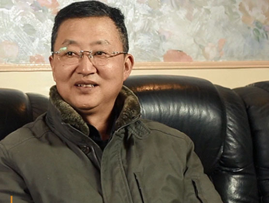
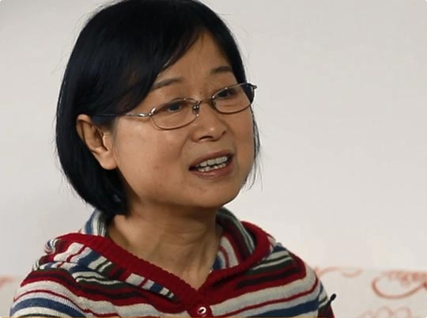
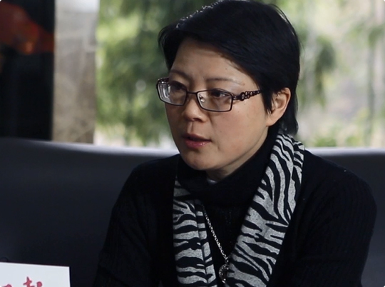
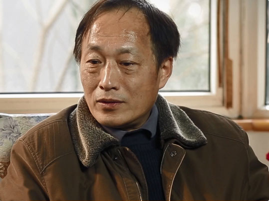

- 
- 案例：黄矛 第二军医大学著名教授
- 我是在2012年的夏天体检确认肺癌晚期无法手术，只能做化疗。一开始是中西二药联合化疗，经过十几次治疗后产生了耐药反应。在朋友的介绍下接识了“中赢生命方舟公益计划”——NK细胞免疫治疗法，从2014年6月首次细胞回输体验三个月以后，肿瘤从维持在1.9*1.2cm水平进一步缩小到1.5*1.0cm，到现在大概已经做了8次细胞回输，平均每个月1次，有效地仰制了这个肿瘤的增殖，同时体质和免疫的效果明显变强。
- 案例：郭茂洪 52岁 在职项目经理
- 在参加NK细胞回输三个月以来，明显感觉从浅睡眠状态多，变成深睡眠多、噩梦少了，第二天醒来精神饱满，肤色变得更有活力，精神更充沛了。
- 
- 案例：倪齐英 59岁 在职教师
- 做完中赢生命方舟保健后，现在冬天几乎没有犯头痛病，效果非常明显。原来我睡到半夜二三点肯定会醒，然后梦很多，保健以后睡眠质量也提高了，梦也变少了，一觉睡到自然醒，就连中午不午睡，精神状态也特别的好了。
- 
- 案例：毛咏旻 46岁 医务工作者
- 我是在2012年的夏天体检确认肺癌晚期无法手术，只能做化疗。一开始是中西二药联合化疗，经过十几次治疗后产生了耐药反应。在朋友的介绍下接识了“中赢生命方舟公益计划”——NK细胞免疫治疗法，从2014年6月首次细胞回输体验三个月以后，肿瘤从维持在1.9*1.2cm水平进一步缩小到1.5*1.0cm，到现在大概已经做了8次细胞回输，平均每个月1次，有效地仰制了这个肿瘤的增殖，同时体质和免疫的效果明显变强。
- 
- 案例：颜景杭 59岁 外贸职员
- 感觉自己年纪也大了，就是想体验一下NK细胞的有没有效果，回输后，一个感觉是打球以后的疲劳程度要下降，比较容易恢复，第二个就是眼神比原来要好很多，以前是每天下午三点基本就看不见东西了，就很模糊了，现在就连晚上也能看见了，现在的感觉要比看之前看那个介绍要更加强烈一点。

- 案例：蒋森涓 60岁 退休
- 我是抱着试试看的态度来参加这次活动，刚刚回输完第一次的话，感觉在家里看电视的时候，眼睛好像一下子清楚了，好多了，然后我觉得好像真的有用，还有就是感觉睡觉、精神都比以前稍微好一点了，就是这种感觉。